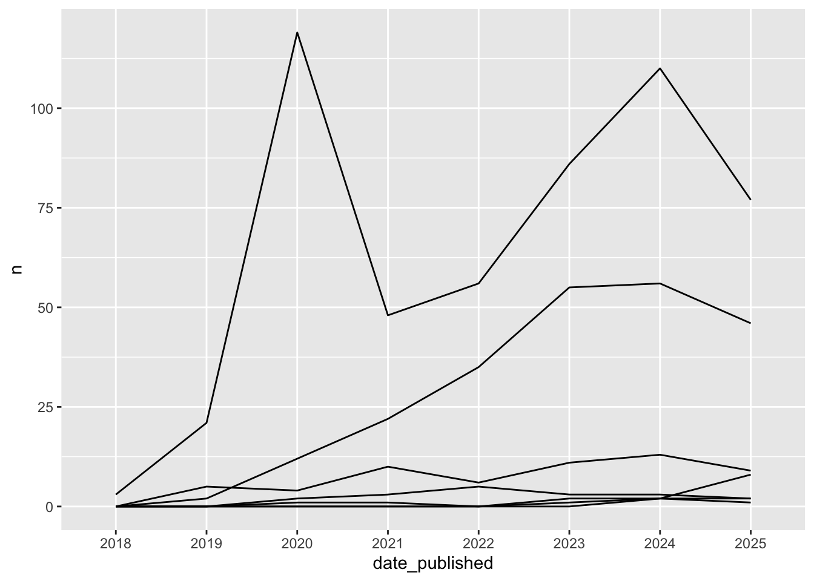
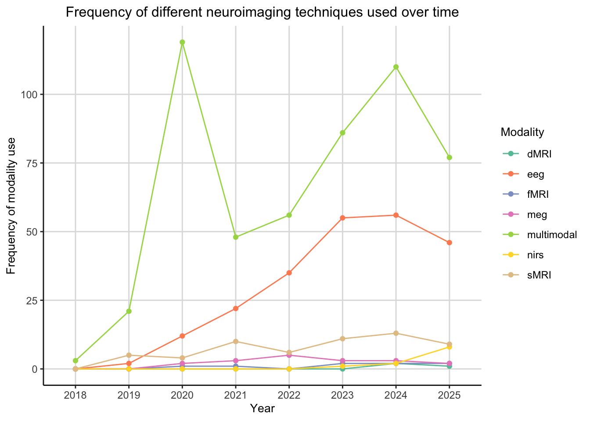

# Install packages - update as you progress through the project
# Load packages
library(tidyverse)
library(here)
library(plotly)PSY6422 Mini Project
1.0 Overview
[Provide overview of what this page contains]
1.1 Packages
2.0 Data Origins
The data used in this project was found in a Crowdsourced list of ‘Open Psychological Datasets’. In this list was the OpenNeuro Dataset of Metadata. OpenNeuro is a data archive that shares public datasets for others to use in their research. The meta-dataset used in this project consists of a list of neuroimaging studies that have used a range of imaging modalities. This data was collected by researchers uploading their data to the data archive. The dataset was downloaded on the 10th of October 2025 and therefore may not contain all data that is in the live metadata online.
2.1 Load Data
# Load Open Neuro Metadata dataset
neuroscience_raw <- read_csv(here("datasets", "neuroscience_metadata.csv"))2.2 Raw Data Summary and Variables
# Show the first ten rows of the raw data
head(neuroscience_raw, 10)# A tibble: 10 × 48
accession_number dataset_url dataset_name made_public most_recent_snapshot
<chr> <chr> <chr> <chr> <chr>
1 ds000001 https://openn… ds001 10/12/2016 5/14/2020
2 ds000002 https://openn… Classificat… 10/12/2016 7/14/2018
3 ds000003 https://openn… Rhyme judgm… 10/13/2016 5/14/2020
4 ds000005 https://openn… ds000005 10/13/2016 7/14/2018
5 ds000006 https://openn… ds000006 10/13/2016 7/14/2018
6 ds000007 https://openn… ds000007 10/13/2016 7/14/2018
7 ds000008 https://openn… ds000008 10/13/2016 7/14/2018
8 ds000009 https://openn… ds000009 12/15/2016 7/14/2018
9 ds000011 https://openn… Classificat… 10/13/2016 12/14/2022
10 ds000017 https://openn… ds000017 11/7/2016 7/14/2018
# ℹ 43 more variables: num_subjects <dbl>, modalities <chr>, dx_status <chr>,
# ages <chr>, tasks <chr>, num_trials <dbl>, study_design <chr>,
# domain_studied <chr>, longitudinal <chr>, processed_data <chr>,
# species <chr>, nondefaced_consent <chr>, affirmed_defaced <chr>,
# doi_of_papers_from_source_data_lab <chr>,
# doi_of_paper_published_using_openneuro_dataset <chr>, senior_author <chr>,
# size_gb <dbl>, ...23 <lgl>, ...24 <lgl>, ...25 <lgl>, ...26 <lgl>, …# Provide a summary of the dataset
summary(neuroscience_raw) accession_number dataset_url dataset_name made_public
Length:2502 Length:2502 Length:2502 Length:2502
Class :character Class :character Class :character Class :character
Mode :character Mode :character Mode :character Mode :character
most_recent_snapshot num_subjects modalities dx_status
Length:2502 Min. : 0.00 Length:2502 Length:2502
Class :character 1st Qu.: 12.00 Class :character Class :character
Mode :character Median : 25.00 Mode :character Mode :character
Mean : 45.27
3rd Qu.: 47.00
Max. :2951.00
NA's :1014
ages tasks num_trials study_design
Length:2502 Length:2502 Min. : -1.0 Length:2502
Class :character Class :character 1st Qu.: 9.0 Class :character
Mode :character Mode :character Median : 72.0 Mode :character
Mean : 807.5
3rd Qu.: 300.0
Max. :26760.0
NA's :2297
domain_studied longitudinal processed_data species
Length:2502 Length:2502 Length:2502 Length:2502
Class :character Class :character Class :character Class :character
Mode :character Mode :character Mode :character Mode :character
nondefaced_consent affirmed_defaced doi_of_papers_from_source_data_lab
Length:2502 Length:2502 Length:2502
Class :character Class :character Class :character
Mode :character Mode :character Mode :character
doi_of_paper_published_using_openneuro_dataset senior_author
Length:2502 Length:2502
Class :character Class :character
Mode :character Mode :character
size_gb ...23 ...24 ...25 ...26
Min. : 0.000 Mode:logical Mode:logical Mode:logical Mode:logical
1st Qu.: 3.188 NA's:2502 NA's:2502 NA's:2502 NA's:2502
Median : 12.180
Mean : 56.532
3rd Qu.: 45.005
Max. :8925.160
NA's :1024
...27 ...28 ...29 ...30 ...31
Mode:logical Mode:logical Mode:logical Mode:logical Mode:logical
NA's:2502 NA's:2502 NA's:2502 NA's:2502 NA's:2502
...32 ...33 ...34 ...35 ...36
Mode:logical Mode:logical Mode:logical Mode:logical Mode:logical
NA's:2502 NA's:2502 NA's:2502 NA's:2502 NA's:2502
...37 ...38 ...39 ...40 ...41
Mode:logical Mode:logical Mode:logical Mode:logical Mode:logical
NA's:2502 NA's:2502 NA's:2502 NA's:2502 NA's:2502
...42 ...43 ...44 ...45 ...46
Mode:logical Mode:logical Mode:logical Mode:logical Mode:logical
NA's:2502 NA's:2502 NA's:2502 NA's:2502 NA's:2502
...47 ...48
Mode:logical Mode:logical
NA's:2502 NA's:2502
As seen from viewing the first ten rows of the raw data, there are 48 columns. Due to the this, not all variables are shown when using the head() function therefore, I have used the summary() function to gain information about the hidden variables. Using this function determines that first 23 of the 48 columns are variables with the remaining, 25 columns containing NAs. From these 23 variables, 3 will be retained for the analysis conducted in this project. These variables are as follows:
| Variable Name | Meaning |
|---|---|
| made_public | the date the dataset was made public |
| modalities | the imaging modalities used in the study |
| species | the species of the subjects used in the study |
3.0 Research Question
[In plain English, a simple statement of what question(s) your visualisation will attempt to address]
The aim of this project is to visualise how has use of neuroimaging techniques in human studies changed over time. The visualisation produced to answer this research question will demonstrate the count of individual (provide examples) and multimodal imaging techniques over time from [beginning year] to [end year].
4.0 Data Preparation
[Steps taken to clean the data, exclude outliers, sanity check the data range and values, create summary statistics, grouped variables, etc. Show the first few rows of the processed data, if possible. Showing the code which does this where relevant]
4.1 Data Cleaning
Firstly the variables and empty columns were removed from the dataset so that only the variables needed to create the final dataset for the visualisation remained. In addition to this, two new columns were created: ‘ID’ and ‘date_published’. The ‘ID’ column makes the data easier to read while the ‘date_published’ column converts the ‘made_public’ data from a character variable to a date variable. The ‘made_public’ column was then removed to avoid confusion with the new ‘date_published’ column.
## Clean data -----------------------------------------------
### Make dataset with just the variables needed for the -
### project
neuroscience_data <- neuroscience_raw %>%
select(made_public, modalities, species) %>% # Only retain these columns
drop_na() %>% # Remove all rows containing NAs
mutate(ID = row_number(), .before = 1, # Create an ID column to the left of the dataset
date = as.Date(made_public, "%m/%d/%Y"), # Create a date column
date_published = format(date, "%Y")) %>% # Remove the day and month
select(ID, date_published, modalities, species) # Remove the made_public and date columnNext the ‘species’ column was filtered to only include human studies as the research question involves investigating the neuroimaging techniques in humans.
### Remove subjects that aren't human
human_data <- neuroscience_data %>%
filter(species == "Human")
### Sanity Check: check that there aren't any non-human species remaining
for(i in human_data$species){
if(i != "Human"){
print("Test Failed") # If test is passed nothing should be printed
}
}4.2 Renaming ‘modalities’ values
The values in the modalities column were not suitable for this project as they were inconsistent strings. In order to make the data ready for producing a visualisation, the values were recoded into 6 categories: ‘multimodal’, ‘eeg’, ‘meg’, ‘dMRI’, ‘fMRI’, and ‘sMRI’.
### View the number of modalities in the dataset and save as a dataset
modality_count <- human_data %>%
group_by(modalities) %>%
count()
### Remove unspecified groups in modalities variable and rename with imaging categories
modality_data <- human_data %>%
filter(modalities != "beh") %>%
mutate(modalities = case_match(modalities,
c("bold, events, t1w",
"eeg, nirs",
"mri_diffusion, mri_functional, mri",
"mri_diffusion, mri_functional, mri_structural, eeg, mri",
"mri_diffusion, mri_functional, mri_structural, mri",
"mri_diffusion, mri_structural, eeg, mri",
"mri_diffusion, mri_structural, mri",
"mri_diffusion, mri_structural, mri_functional, mri",
"mri_diffusion, mri_structural, mri_functional, mri, pet",
"mri_diffusion, mri_structural, mri_functional, mri_perfusion, mri",
"mri_functional, mri, eeg",
"mri_functional, mri_diffusion, mri_structural, eeg, mri, beh",
"mri_functional, mri_diffusion, mri_structural, meg, mri",
"mri_functional, mri_diffusion, mri_structural, mri",
"mri_functional, mri_perfusion, mri_structural, mri",
"mri_functional, mri_structural, eeg, mri",
"mri_functional, mri_structural, mri",
"mri_functional, mri_structural, mri, beh",
"mri_functional, mri_structural, mri, eeg",
"mri_functional, mri_structural, mri, eeg, beh",
"mri_functional, mri_structural, mri, ieeg",
"mri_functional, mri_structural, mri_diffusion, mri",
"mri_functional, mri_structural, pet_dynamic, mri, pet",
"mri_functional, pet_static, mri_structural, pet_dynamic, mri, pet",
"mri_structural, eeg, mri",
"mri_structural, ieeg, mri",
"mri_structural, meg, mri",
"mri_structural, meg, mri, beh",
"mri_structural, mri, pet",
"mri_structural, mri_diffusion, mri",
"mri_structural, mri_diffusion, mri_functional, mri",
"mri_structural, mri_diffusion, mri_functional, mri, eeg",
"mri_structural, mri_functional, ieeg, mri",
"mri_structural, mri_functional, mri",
"mri_structural, mri_functional, mri, eeg",
"mri_structural, pet, mri",
"pet_dynamic, mri_functional, mri_structural, mri, pet",
"t1w, bold, events",
"t1w, bold, events, fieldmap",
"t1w, channels, eeg, events, bold") ~ "multimodal",
c("channels, eeg, electrodes, events",
"channels, eeg, events",
"eeg, beh",
"ieeg",
"ieeg, eeg") ~ "eeg",
"meg, beh" ~ "meg",
"mri_diffusion, mri" ~ "dMRI",
"mri_functional, mri" ~ "fMRI",
c("mri_structural, mri",
"t1w") ~ "sMRI",
.default = modalities))
### Sanity check: Ensure the total number of observations is 846
### and that the only categories are "multimodal", "eeg", "meg", "dMRI", "fMRI", and "sMRI"
modality_count <- modality_data %>%
group_by(modalities) %>%
count()
sum(modality_count$n)[1] 8464.3 Reshaping the data
Using the clean ‘modality_data’, the final dataset that is used in the visualisation was created by grouping the data by modality and calculating the count of each modality per year.
## Reshaping the data -------------------------------------
### Calculate the count for each modality per year
neuroimaging_overtime <- modality_data %>%
group_by(modalities) %>%
count(date_published)
### Sanity check: Ensure the total of column 'n' is 846
sum(neuroimaging_overtime$n)[1] 846### View the first 10 rows of the data
head(neuroimaging_overtime, 10)# A tibble: 10 × 3
# Groups: modalities [3]
modalities date_published n
<chr> <chr> <int>
1 dMRI 2024 2
2 dMRI 2025 1
3 eeg 2019 2
4 eeg 2020 12
5 eeg 2021 22
6 eeg 2022 35
7 eeg 2023 55
8 eeg 2024 56
9 eeg 2025 46
10 fMRI 2020 1Viewing the neuroimaging_overtime dataset showed that some of the imaging modalities did not have any data for certain years. This would make the whole dataset difficult to visualise, therefore it was decided to assign a value of 0 to the missing years for each modality. A custom function was created to do this.
# Create data frame for the missing data
missing_data <- function(modality, date, count){
data.frame(
modalities = modality,
date_published = date,
n = count
)
}### Some modalities don't have data for every year
### To ensure this is reflected in the plot, add rows for these cases where n = 0
### First make a new dataframe with the missing data:
### dMRI is missing 2018, 2019, 2020, 2021, 2022, and 2023
dMRI_rows <- missing_data("dMRI", c("2018", "2019", "2020", "2021", "2022", "2023"), 0)
### eeg is missing 2018
eeg_rows <- missing_data("eeg", "2018", 0)
### fMRI is missing 2018, 2019, and 2022
fMRI_rows <- missing_data("fMRI", c("2018", "2019", "2022"), 0)
### meg is missing 2018 and 2019
meg_rows <- missing_data("meg", c("2018", "2019"), 0)
### nirs is missing 2018, 2019, 2020, 2021, and 2022
nirs_rows <- missing_data("nirs", c("2018", "2019", "2020", "2021", "2022"), 0)
### sMRI is missing 2018
sMRI_rows <- missing_data("sMRI", "2018", 0)
### Join the missing data dataframes
missing_modality_years <- rbind(dMRI_rows, eeg_rows, fMRI_rows, meg_rows, nirs_rows, sMRI_rows)
### Join missing_modality_years and neuroimaging_overtime
neuroimaging_final <- rbind(neuroimaging_overtime, missing_modality_years)
### Order the dataframe by modality and date_published
neuroimaging_final <- neuroimaging_final[with(neuroimaging_final, order(modalities, date_published)), ]At this point the data was ready for visualisation. Below is a preview of the processed data.
### Preview the final dataset
head(neuroimaging_final, 10)# A tibble: 10 × 3
# Groups: modalities [2]
modalities date_published n
<chr> <chr> <dbl>
1 dMRI 2018 0
2 dMRI 2019 0
3 dMRI 2020 0
4 dMRI 2021 0
5 dMRI 2022 0
6 dMRI 2023 0
7 dMRI 2024 2
8 dMRI 2025 1
9 eeg 2018 0
10 eeg 2019 25.0 Visualisation
[Graph or graphs. Documentation explaining any motivation (although good graph labelling is better than explanation in the accompanying text). Code for producing graph(s)]
5.1 Draft Plot
An initial basic line graph was plotted to get an idea of what the data looked like as a visualisation.
# Create basic plot to understand what the data looks like plotted
draft_plot <- ggplot(neuroimaging_final, aes(x = date_published, y = n, group = modalities)) +
geom_line()
print(draft_plot)
Layers were added to this plot to customise the colour of the lines to represent each modality, change the size of the font for the labels and change the colours of the grid lines. To do this a custom theme was created and a colour palette was used.
# Make a custom theme
theme_neuroimaging = theme(
plot.title = element_text(size = 12, hjust = 0.5),
axis.title = element_text(size = 10),
legend.position = "right",
legend.title = element_text(size = 10),
panel.background = element_rect("gray100"),
panel.grid.major = element_line(colour = "gray87"),
axis.line = element_line(colour = "gray10")
)## Adding layers -----------------------------------------
### Add geom_point so that each plot point stands out
### Label the axis and legend and provide a title
### Set the colour palette and add a custom theme
draft_plot <- ggplot(neuroimaging_final, mapping = aes(x = date_published, y = n)) +
geom_line(aes(group = modalities, text = paste("Modality:", modalities), colour = as.factor(modalities))) +
geom_point(aes(group = modalities, text = paste("Modality:", modalities), colour = as.factor(modalities))) +
labs(x = "Year",
y = "Frequency of modality use",
title = "Frequency of different neuroimaging techniques used over time",
colour = "Modality") +
scale_colour_brewer(palette = "Set2") +
theme_neuroimagingWarning in geom_line(aes(group = modalities, text = paste("Modality:",
modalities), : Ignoring unknown aesthetics: textWarning in geom_point(aes(group = modalities, text = paste("Modality:", :
Ignoring unknown aesthetics: text### View the draft plot
print(draft_plot)
5.2 Final Interactive Visualisation
To make the final visualisation more intuitive, the ‘plotly’ package was used to introduce an interactive element to the plot. To make sure the interactive labels were reflective of the data, a tooltip was added.
## Make plot interactive -------------------------------
interactive_draft <- ggplotly(draft_plot, tooltip = c("x", "y", "text"))
## Save to environment as final visualisation ----------
neuroimaging_visualisation <- interactive_draftThe final visualisation is rendered below:
### View the final visualisation
neuroimaging_visualisation6.0 Summary
[Brief thoughts on what you have learnt, what you might do next if you had more time / more data]